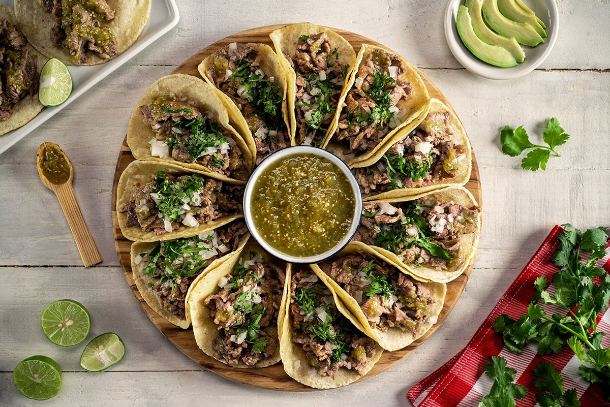

Como hacer ricos tacos

Te enseñaremos como hacer ricos takos, para compartir con amikos
Recetas
- 500 gramos de carne
- 1 cebolla grande picada
- 2 dientes de ajo
- 1 chile de jalapeño (es opcional)
- Una cucharada de aceite de oliva
- Sal y pimienta al gusto
- Tortillas de maiz, nomas no t pases pinche obeso
- Cilantro pa decorar XD
Instrucciones
- Calienta el aceite de oliva en una sartén grande a fuego medio. Agrega la cebolla y cocina hasta que esté suave y translúcida, aproximadamente 5 minutos.
- Agrega el ajo y el chile jalapeño (si lo estás usando) y cocina por 1-2 minutos más.
- Añade la carne y cocina hasta que esté dorada por ambos lados, aproximadamente 5-7 minutos.
- Condimenta con sal y pimienta al gusto.
- Calienta las tortillas de maíz en una sartén o en el microondas.
- Sirve las tiras de carne en las tortillas de maíz calientes y decora con cilantro picado.
¡Y listo! Tienes unos deliciosos tacos de carne para disfrutar en cualquier momento. Puedes acompañarlos con tus salsas favoritas y agregar otros ingredientes como aguacate, queso rallado, tomate y lechuga si lo deseas. ¡Buen provecho!
REGRESAR